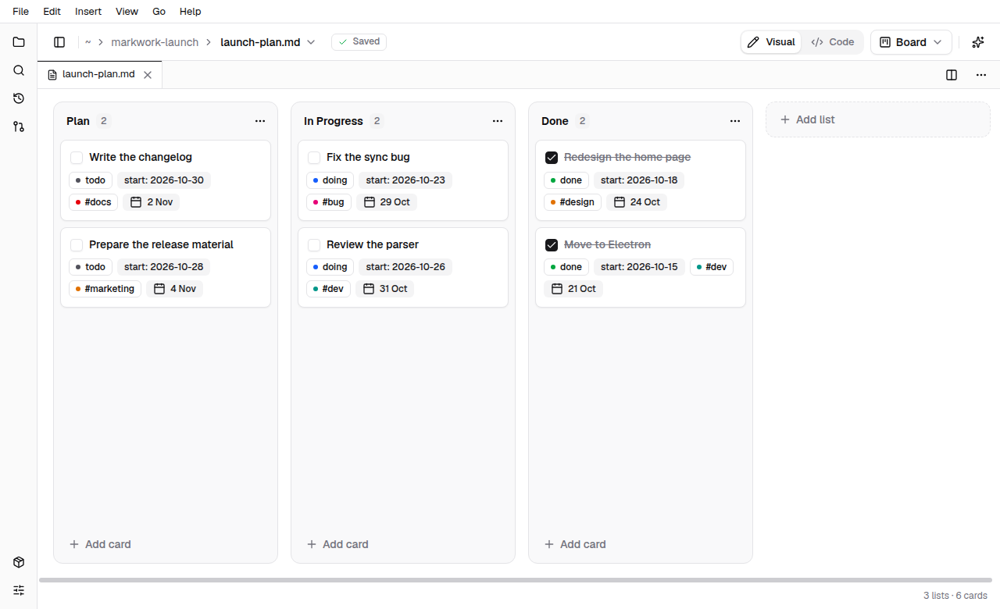
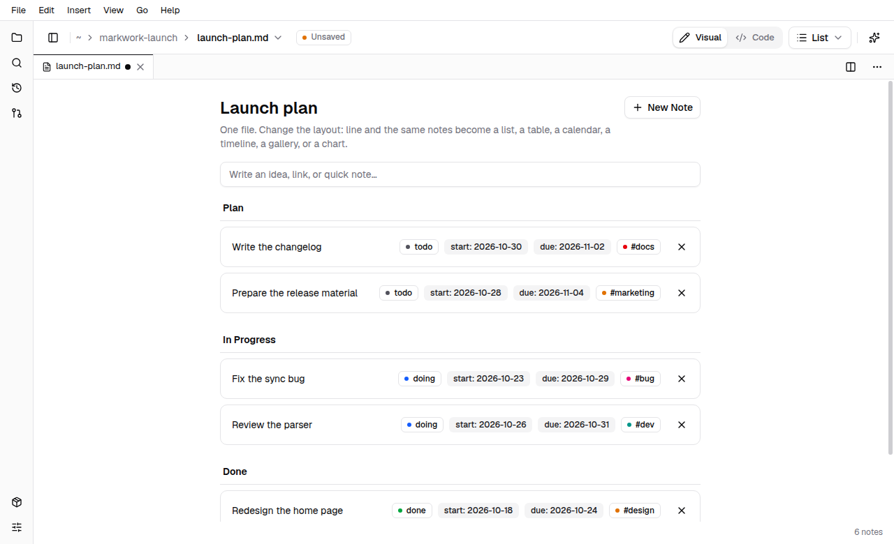
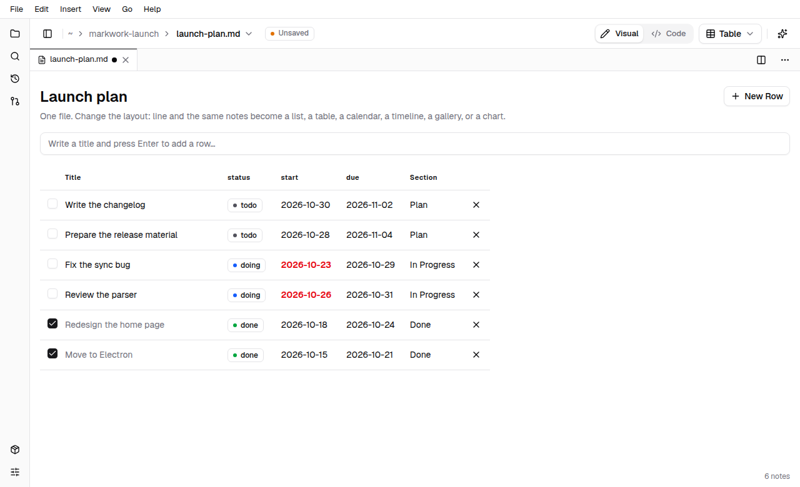
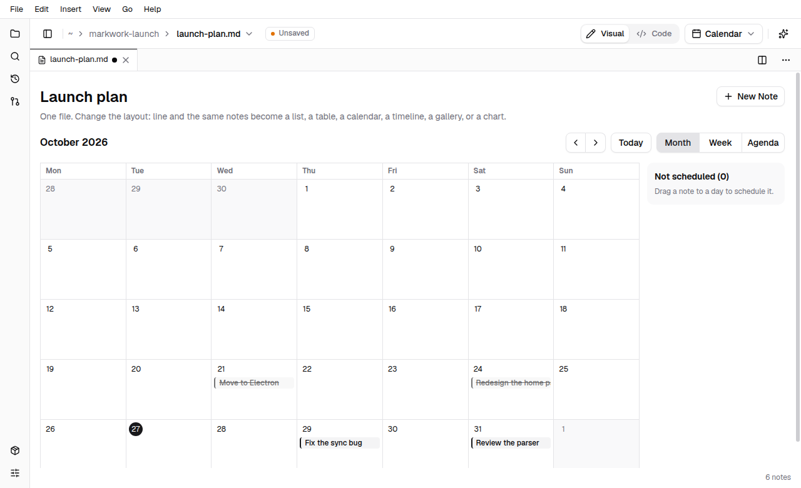
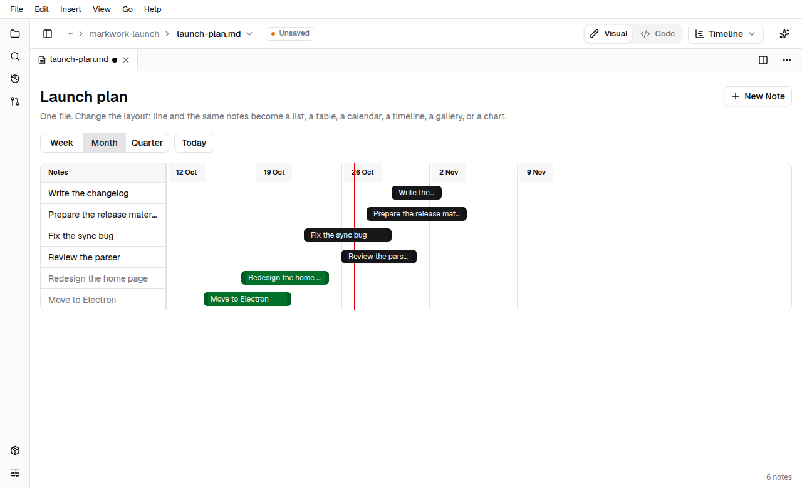
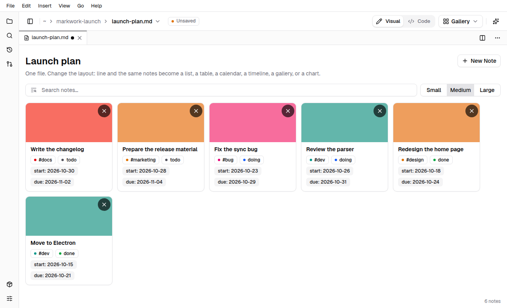
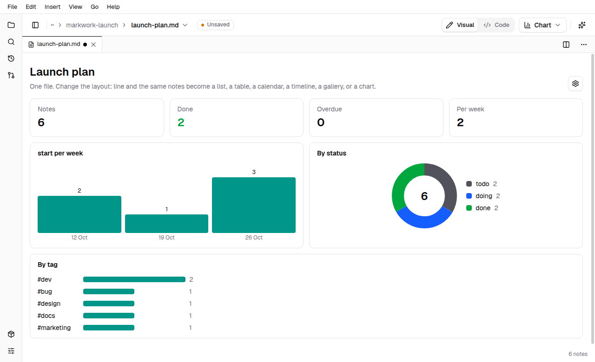

Workspace
Views of the same notes
A Markdown file with a layout: line in its frontmatter shows its notes as something other than text. The notes are the same in every view: change the line and the same file becomes a board, a list, a table, a calendar, a timeline, a gallery, or a chart. Nothing is converted or rewritten.

Choosing a view
- Use the layout button in the header (Text, Board, List, Table, …), or edit
layout:in the frontmatter. Ctrl+Shift+B switches between the view and the text of the file. - A
##heading is a column on a board and a section in a list or a table; a- [ ]item is a card, a note, or a row. Every change you make in a view is written to the Markdown text as one undo step. - A note carries typed values as
[key:: value]. A file declares its fields in the frontmatter, one per line askey: type(arguments):select(todo, doing, done),date,progress,number,text,person,agent,link, with[]after the type for several values. Fields… in the ☰ menu edits the list for you. - The ☰ menu → New Kanban Board, New Inbox, and New Table (also in the file tree's right-click menu) create a file with the right frontmatter.
---
layout: board
fields:
status: select(todo:gray, doing:blue, done:green) = todo
start: date
due: date
---
## Plan
- [ ] Fix the sync bug #bug [status:: doing] [start:: 2026-10-14] [due:: 2026-10-20]Board
layout: board: lists side by side and cards you drag between them. See The kanban board. With group: status the columns are the values of a select field instead of ## headings: dragging a card to another column sets its field, and a card added to a column gets that value.

List
layout: list: an inbox. Quick capture on top, notes with tags and fields, drag to reorder or to another section. See Inbox.

Table
layout: table: one row per note across every section, one column per field. columns: [title, status, due] picks and orders the columns (section is a column too), and sort: due or sort: -due sorts the rows.
- A click on a header sorts by that column (ascending, descending, back to the document order). This is only in the view; the file is not rewritten.
- A click on a cell changes that field in place. A date past its day is red unless the note is done.
- A click on a title edits the note, the checkbox marks it done, and ✕ deletes the row. The entry above the table and New Row add a note.
This is different from a CSV file, which is plain data with no notes; see CSV tables.

Calendar
layout: calendar: the notes on a month grid by a date field (date: due, the default; else the first date field). Month, Week, and Agenda are three views of the same notes.
- Drag a note to another day to change its date (a time is kept), or to the side panel to take its date away.
- Click a note to edit it; double-click a day to add a note on that day.
- Today is highlighted, notes past their date are red, and done ones are struck through.

Timeline
layout: timeline: a bar per note from its start field to its end field (defaults start and due). A note with one date is a one-day marker; a note with none has a row but no bar.
- Drag a bar to move both dates, drag an edge to change one, click to edit.
- The red line is today. The dark part of a bar is the
progressfield (or the whole bar for a done note). - Week, Month, and Quarter change the scale;
zoom:sets the first.

Gallery
layout: gallery: a card per note with a cover. The cover is the image named by the cover: field (a path relative to the document), else the first image in the note, else a color from the first tag. A card shows the title, the first line of the note, tags, and fields.
- The search entry filters the cards;
size: small|medium|large(or the buttons) sets their width.

Chart
layout: chart: counts the notes without changing them: notes, done, overdue (past due and not done), the average per week, notes created per week or month (by: a date field, period: week|month), notes per value of a select field (group:, drawn as a donut), and per tag.
charts: [kpi, bar, donut:status, donut:priority, tags]picks the panels and their order;bar:due:monthcounts by another date field and period.- The gear button at the top right edits that list for you: move, remove, add, and choose the fields.

The agent and views
The agent understands these files by their structure, not only their text: describe_schema gives it the layout, fields, and select options, and query_notes filters, sorts, and counts notes by field. Changes it proposes to notes and fields go through the same review window as any other change (see Proposals and approval).